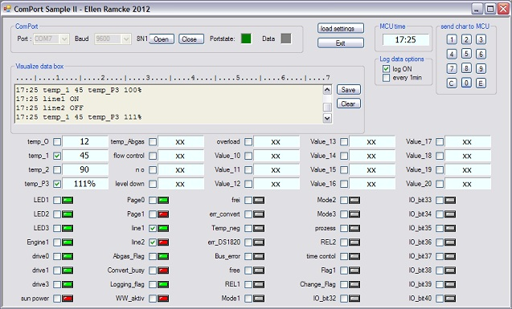

In addition to my previous contribution (SerialPort Sample in VB.NET) I will now present a extended version.
http://code.msdn.microsoft.com/vstudio/SerialPort-Sample-in-VBNET-fb040fb2
I have written that code as simple beginners code especially for those who come from VB6 and mscomm32.ocx control.
This contribution based on the same technique SerialPort Class,
but is has more features.
But this code is not only mentioned to learn the SerialPort class. This program is a useful little tool to visualize data sent from a microcontroller or any other device.
The features are:
I use this tool very often in my house. A microcontroller sends 16 temperatur values and digital IO states from my heating system.
There are no special requirements necessary. You need only one COM port on system.
The data from the external device must have this format:
'>00:42 45 18 18 18 45 45 18 18 18 18 45 18 24 18+130 97 4 170 <carriage return>
'| | |
|| max 5 bytes
'| | |
+-- separator
'| | + values 1 .. max 20
'| + --- mcu time
'+ ------ this are measuring data
As You can see I use spaces as delimiter.
The delimiter "+" is used to distinguish between value and byte section
The amount of values which You send can diverge from 1 to 20 (max). The character set depends on Your device.
Windows uses internally Endcoding.Default when not otherwise specificated.
Possible items are:
Then we have the byte section. You can receive up to 5 bytes. The format must be 0 .. 255 decimal.
My code splites each byte into its representing bits b0 - b7 and visualize them in the controls.
Example: used frames in this sreenshot:
>17:25 12 45 90 100%+127 170
>17:25 12 45 90 100%+127 85
>17:25 12 45 90 100%+127 85

GroupBox: ComPort
Here You can make Your com port settings. When the application starts it will retrieve all available COM ports from the System.
8N1 are standard settings which You can only change in the code.
(Databits 8, Pariity None, Stoppbits 1)
GroupBox: MCU time
Displays the actual time from the last received frame.
GroupBox: send char to MCU
A button array which sends its representing value as char to mcu "1",...."C","E"
GroupBox: log data options
Checkbox: "Log ON" logging is enabled. Every frame is evaluated for log data
Checkbox: "every 1min" only frames when minute has changed are evaluated
GroupBox: Visualize data box
Auto generated log lines. The values data every evaluated frame.
The bits only when one has changed since the last frame.
Example:
17:25 temp_1 45 temp_P3 100%
17:25 temp_1 45 temp_P3 100%
17:25 line1 OFF
17:25 line2 ON
17:25 temp_1 45 temp_P3 100%
17:25 line1 ON
17:25 line2 OFF
17:25 temp_1 45 temp_P3 111%
Here mcu has send 4 frames. Value temp_P3 has changed
the bits line1 & line2 have changed their logical state in each frame
Buttons: Save & Clear
Clears the RichtextBox or save the content to a plaintext file.
Display area
As You see we have 20 Values fields and 40 bit fields.
when one or more of these checkboxes are checked this signal will be enabled for logging
The default description of the field are "Value_xx" or IO_bitXX.
To make Your own project specific descriptions, use the file settings.ini in the execution folder.
settings.ini has this format:
<1>
temp_O
temp_1
temp_2
temp_P3
temp_Abgas
flow control
no
level down
overload
<2>
LED1
LED2
LED3
Engine1
drive0
drive1
drive3
sun power
Page0
Page1
line1
line2
Abgas_Flag
Convert_busy
Logging_flag
WW_aktiv
frei
err_convert
Temp_neg
err_DS1820
Bus_error
free
REL1
Mode1
Mode2
Mode3
prozess
REL2
time contol
Flag1
Change_Flag
Working with label and Textboxes is only a suggestion. I think I have inspired You now. You can make many more: progressbars, bargraphs, usercontrols and graphic. Here a sample code:
http://code.msdn.microsoft.com/GDI-Windows-Forms-Sample-II-65be90d8
OK so far. I think download it and be enjoyed. (And make Your own visualisation system now)
To learn more about the datareceived event I refer to my other contribution.
regards Ellen
Bug: No comport on system 2012-07-13